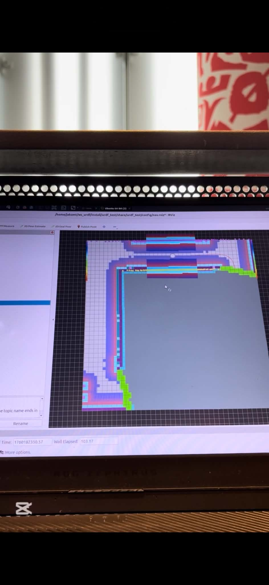

Autonomous wall-following robot
Ros2
Gazebo
Python
SLAM
Autonomous wall-following robot built in ROS2 and Gazebo. The robot uses a LIDAR sensor to detect walls and obstacles, and follows the walls while avoiding collisions. The robot is able to navigate through a maze-like environment. Video below doesnt demonstrate the SLAM but uses the lidar with a PID controller to distance itself away from the wall and drive though the maze.
Gallery
